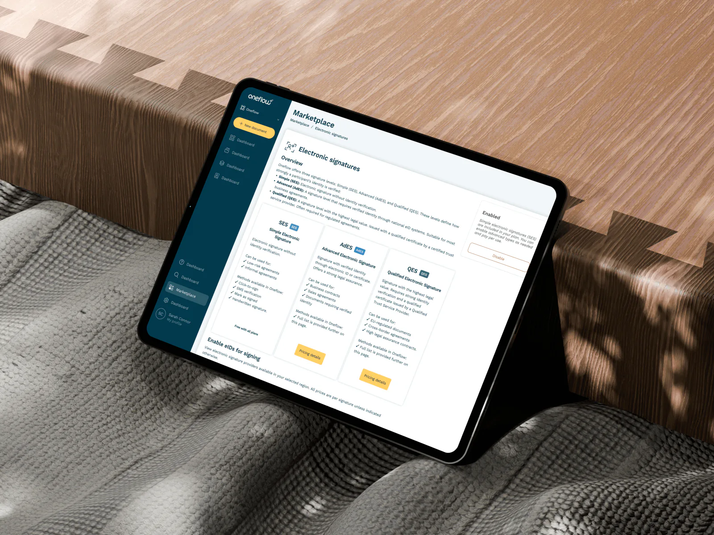
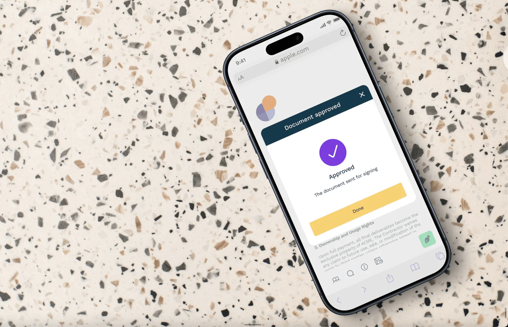

Product Designer
I specialize in B2B SaaS products that are complex yet intuitive, powerful yet simple, and designed and written together.
View my workDesigned and written together. I’m a product designer with 15+ years across product design, content strategy, UX writing and information architecture. I understand how users think, how systems scale, and how to make complexity feel simple.
Selected work
Designing a high-security contract signing setup
Oneflow • Enterprise Platform
Redesigned a legally binding signing flow to feel as simple as a click. Balanced strict compliance with intuitive UX, turning a high-friction setup into a self-serve experience that dramatically increased completion rates.
96%Setup time ↓

Contract collaboration brought back to product
Oneflow • Enterprise Platform
Designed a "Suggestions" feature that moved collaboration from Slack and email directly into the product. Enabled participants to propose edits in context, with tracked markup and approval flows. Reduced friction and increased contract velocity.
35%↑ Feature adoption

Contract approvals made simple and scalable
Oneflow • Enterprise Platform
Designed a flexible contract approval system that brought structure to complex reviews. Sped up decisions, increased accountability, and fit seamlessly into existing architecture without adding friction.
82%Customer satisfaction

Tools I work with